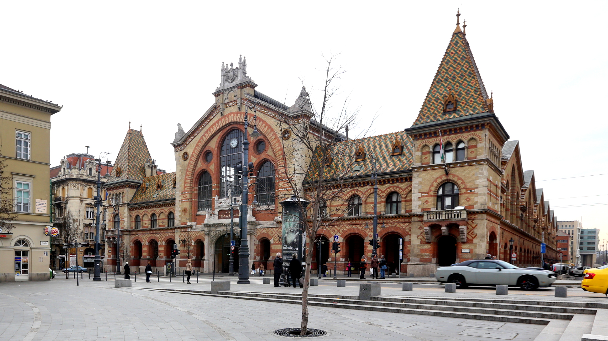

Week of 30 JAN 2022
Week 3 in Hungary

Budapest’s Grand Market Hall, home of delicious, fresh foods at extremely reasonable prices.
This week on Wednesday I had the opportunity to learn how to cook some authentic Hungarian dishes with an instructor from the language school. We first visited the Lehel Tér indoor market to purchase ingredients and practice our Hungarian while doing so. I accidentally asked for 20 boxes of pasta instead of 2 at one point, but luckily the shopkeeper was very perceptive and didn’t actually ring me up for that much. Once we had all of our supplies we returned to the language school and got right to cooking! We made körözött (a paprika-onion-egg soft cheese spread, which we put on toast) and túrós csusza (a lasagna-like noodle and cottage cheese dish, typically with bacon, but we omitted due to dietary restrictions). The körözött was by far my favorite, and I came to learn that Hungarians really like their soft cheeses!
On a more serious note this adventure made me realize the differences in shopping for groceries here versus shopping for groceries in America. Back home, you have the supermarket, open pretty much all the time and selling everything under the sun in relatively large quantity. You can usually go there and reliably get the same things every day, no matter the season. The general “pace” of shopping here is relatively quick. On the other end of the United States market spectrum is the local farmer’s market. Typically open only on the weekend (only select weekends in many cases, often more common in summer months), these markets only have whatever the farmers are growing at that time and are usually higher priced than supermarkets. The pace here is much slower, but it is typically treated as a novelty rather than a place to actually get all the groceries you need.
Hungary, on the other hand, has quite a different grocery-shopping experience overall. There are three main categories, (at least in downtown Budapest): the corner stores, supermarkets (szupermarkets), and the market halls. Starting with the smallest, the corner stores, these markets are strictly the essentials – bread, cheese, drinks, some household products, etc., but no meats or niche products. These could be compared to 7-11 in the US, but far less processed “snackfood” and far more fresh foods (they bake fresh bread and get fresh eggs every day!). The pace at these is very fast, and there will never be more than a 2-person line at the cashier. Next are the supermarkets. These are typically much larger than the corner stores, and have all of the same things with more variety, some of the niche items, more fresh fruits and veggies, and a proper “butcher” counter for meats. These are pretty comparable to US supermarkets, however the pace is very fast. There are typically a lot of shoppers in there bustling about and often a large line forms at checkout. If you take a little too long to bag your goods after paying, you may even be shooed away by the cashier (from personal experience). Prices across both the corner store and the supermarket are pretty comparable. Finally, there are the market halls or local markets (not always in halls). These are not only wonderful architecturally, but they also have the freshest products in town. Still a faster pace than American farmer’s markets but slower than the supermarkets, these markets are typically cheaper than all other options. Even better, they are open 7 days a week and you can get just about anything there. So far my experience has been very positive with Hungarian grocery shopping – hopefully as the weather gets warmer more open-air markets will materialize so I can try them out too!